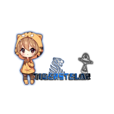
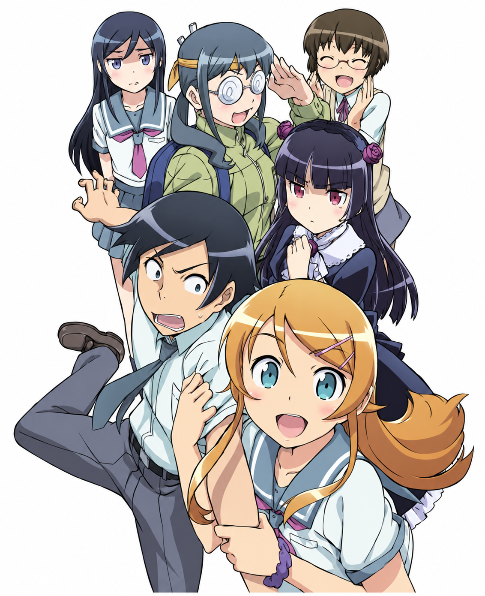
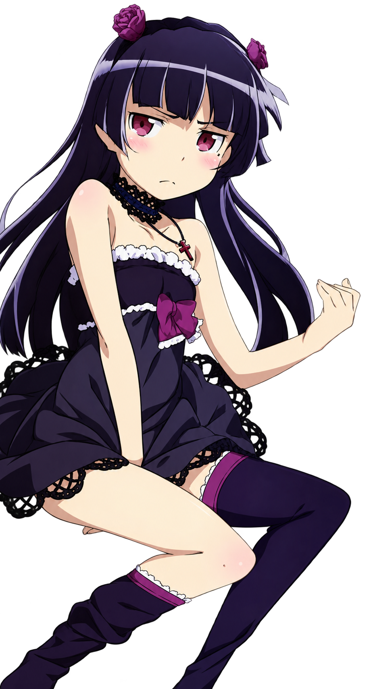

TigerStelar Translations
Coordinación, ajustes y corrección de los diálogos, importación a la ISO, adaptación gráfica y pruebas.

TigerStelarTranslations← Volver al inicioPLAYSTATION PORTABLE
Traducción completa al español de los dos discos, con diálogos, menús e imágenes adaptadas.
Versión pública: próximamente

俺の妹PORTABLEAVANCE
Porcentajes provisionales; se actualizarán conforme avance la revisión.
Traducidos, corregidos e importados en la ISO.

Imágenes, menús y Two-Shots en adaptación.
La parte comprobada funciona correctamente.
Estado estimado del Disco 1.
ACERCA DEL PROYECTO
Este proyecto busca adaptar al español la experiencia de Oreimo en PSP, cuidando el sentido de los diálogos, la presentación y la lectura dentro del juego.
La publicación llegará cuando el trabajo esté listo. Por ahora, esta página servirá para compartir avances oficiales.
NOVEDADES
Los avances más importantes del proyecto, reunidos en un solo lugar.
La página ya permite publicar dudas, comentarios y reportes mediante GitHub Discussions.
Los textos fueron traducidos, corregidos e importados en la ISO.
Continúa el trabajo en imágenes, menús, Two-Shots y comprobaciones dentro del juego.
EN EL JUEGO
Primeras muestras reales del proyecto funcionando en español.
DESCARGAS
La descarga se habilitará aquí cuando exista una versión pública estable. Los enlaces oficiales siempre se publicarán en esta página.
EL EQUIPO
Personas y comunidad que hacen posible esta traducción.
Coordinación, ajustes y corrección de los diálogos, importación a la ISO, adaptación gráfica y pruebas.
Traducción base al español de los diálogos utilizados en el proyecto.
Visitar su página de FacebookColaboración y apoyo durante el desarrollo del proyecto.
Agradecimiento a quienes siguen los avances, prueban el juego y reportan errores.
La lista podrá ampliarse conforme se incorporen nuevas colaboraciones.
INFORMACIÓN
Respuestas rápidas sobre el estado y funcionamiento del proyecto.
Todavía no hay una fecha de lanzamiento. Se publicará cuando la adaptación gráfica y las pruebas alcancen un estado estable.
El proyecto contempla los dos discos. Actualmente, los diálogos del Disco 1 están completados y el trabajo continuará con el resto del contenido.
La compatibilidad se comprobará durante las pruebas. Los resultados confirmados se publicarán en esta misma página.
Las instrucciones se publicarán junto al parche. El proyecto no distribuirá el juego original ni una ISO completa.
Sí. Utiliza la sección de comentarios para compartir el problema y, si es posible, indica en qué escena apareció.
COMPATIBILIDAD
El estado se actualizará conforme avancen las pruebas.
Pruebas parciales en progreso.
Compatibilidad pendiente de confirmación completa.
Diálogos traducidos, corregidos e importados.
Preparado como siguiente etapa del proyecto.
Proyecto fan sin fines de lucro. Oreimo, sus personajes, música y materiales originales pertenecen a sus respectivos propietarios. Esta traducción no incluirá ni distribuirá el juego original.
COMUNIDAD
Dudas y reportes
¿Encontraste un error o tienes alguna pregunta sobre el proyecto? Déjanos un comentario y cuéntanos los detalles.